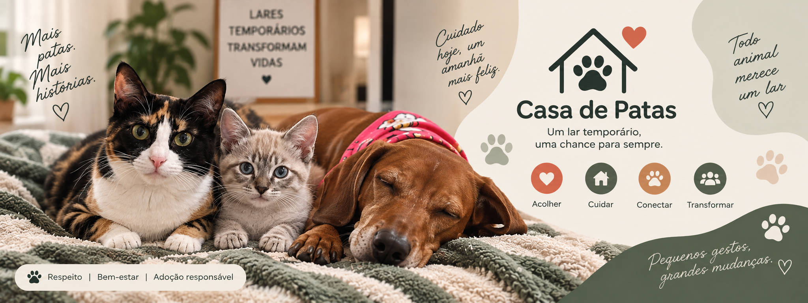

Quem somos

A Casa de Patas é uma ONG dedicada ao acolhimento temporário de cães e gatos que precisam de proteção e cuidado enquanto aguardam por um lar definitivo.
Nossa Missão
Nossa missão é conectar animais que precisam de acolhimento a voluntários dispostos a oferecer segurança, carinho e cuidados durante o período de espera pela adoção.
Como Ajudar
Você pode ajudar oferecendo um lar temporário, apoiando nossos projetos ou contribuindo para que mais animais tenham a oportunidade de encontrar uma nova família.